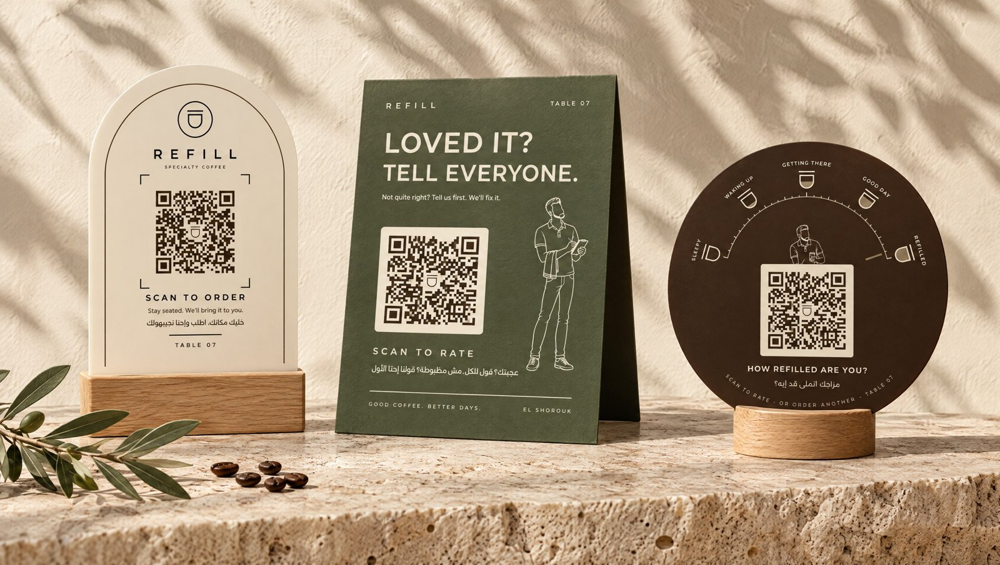
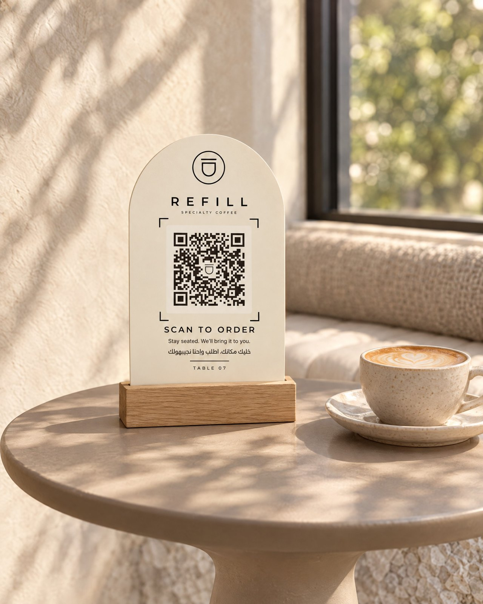
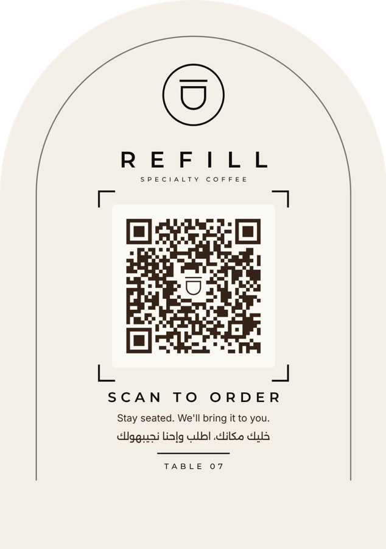
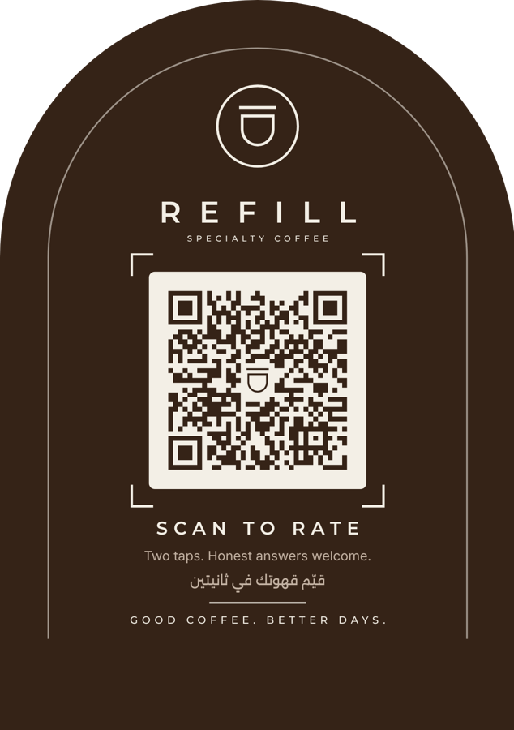
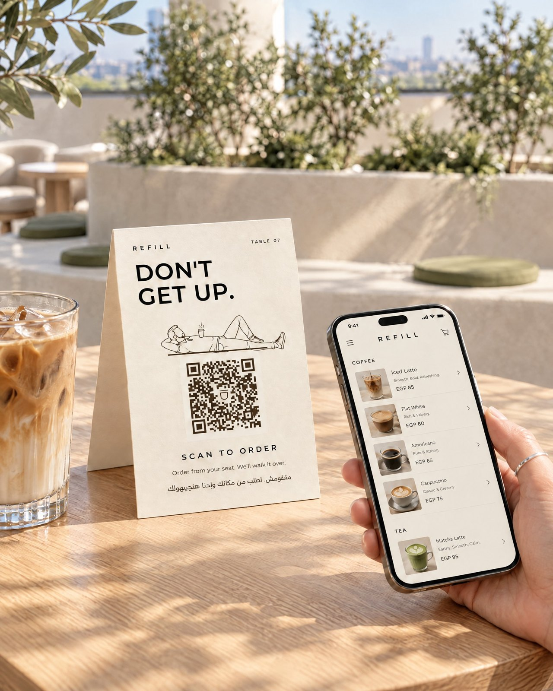
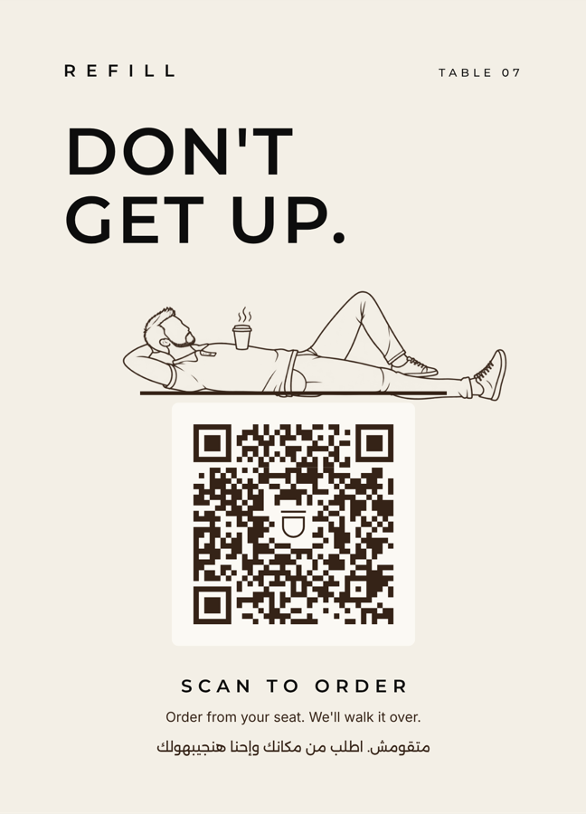
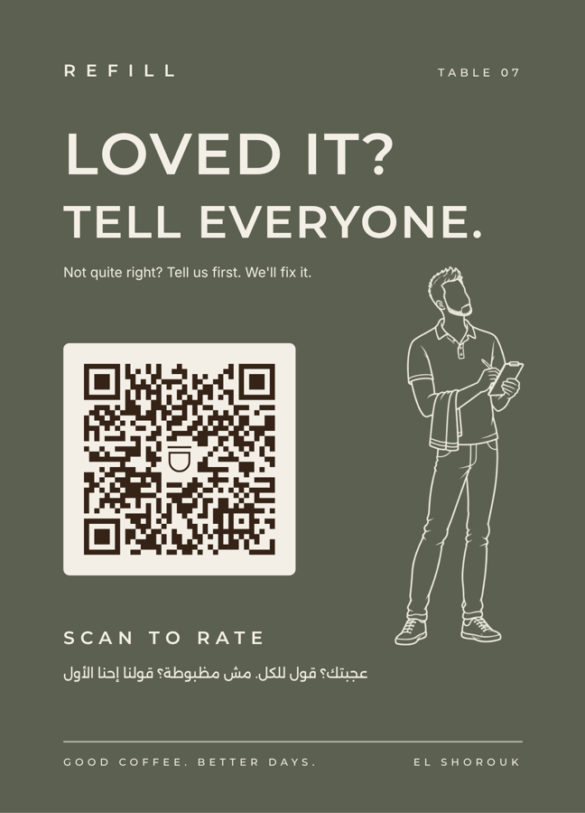
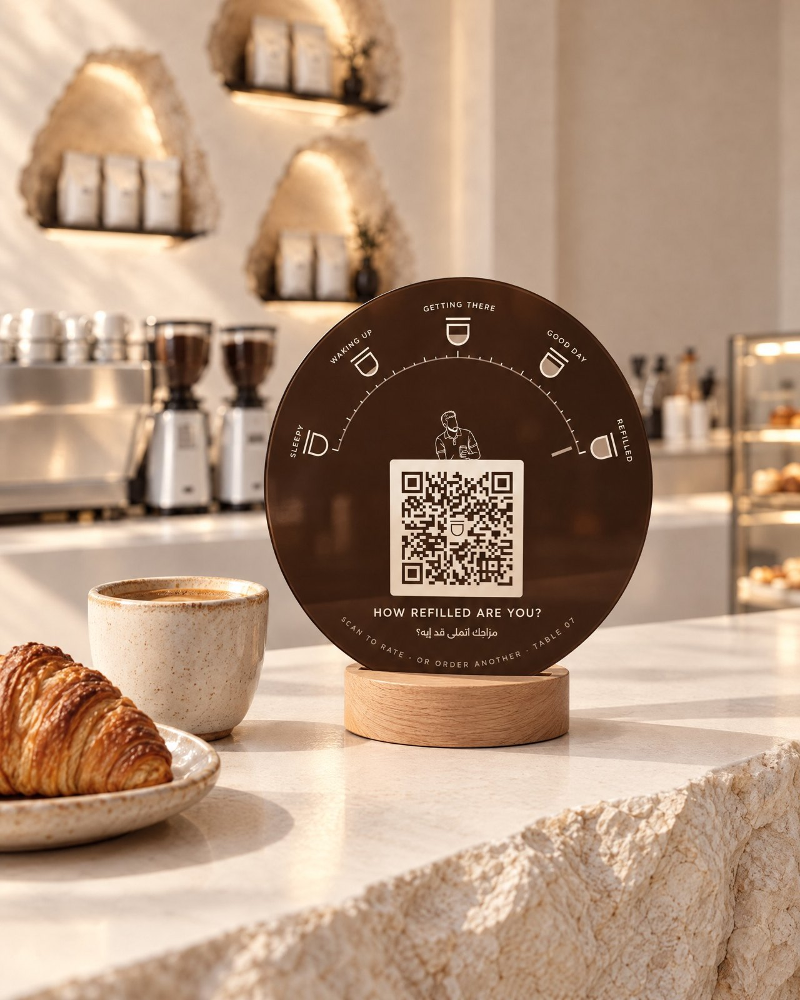
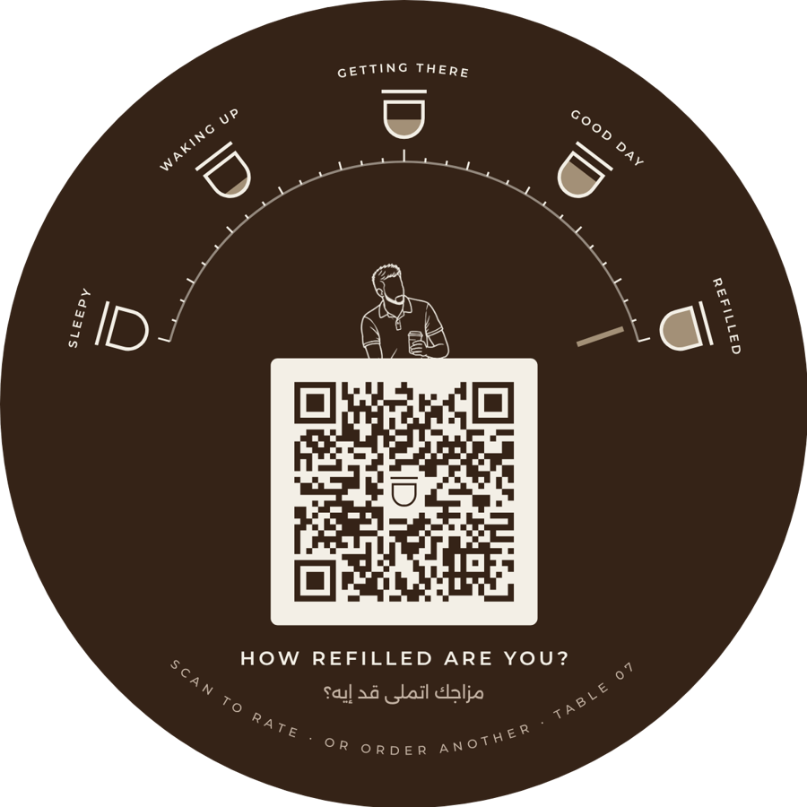

Three objects, one system. Each one fits a different spot in the café, uses the same arch, palette and line-art founder, and carries a QR code tested by machine at phone distances.


Cut in the shape of the café's arched doorway, with the porthole carried on as the logo badge. The QR code sits inside the frame brackets from the social grid. It's the quietest of the three, built to sit next to a flat white.



The founder lounges across the top of the QR code with a coffee on his chest, doing exactly what the sign tells you to do. Turn the card round and he's your waiter, notepad in hand, asking how it was.



A gauge of five Refill cups filling from empty to full: Sleepy, Waking up, Getting there, Good day, Refilled. The needle sits on Refilled, and the founder peeks over the QR card. It asks one question, and the scan answers it.

Each QR is rendered at 300 dpi and read back by a decoder, framed the way a phone frames it, at 100% down to 25% scale. A failing code stops the build. Tables 01 to 12 are generated and checked the same way.
The links are placeholders until you add your ordering and review URLs to config.json. Then rebuild every table with one command.
| Face | QR size | Framed 100/50/33/25% | Full face |
|---|---|---|---|
| Arch · front | 40.5 mm | PASS | PASS |
| Arch · back | 40.5 mm | PASS | PASS |
| Tent · front | 46 mm | PASS | PASS |
| Tent · back | 44 mm | PASS | PASS |
| Refill-o-meter | 35 mm | PASS | PASS |